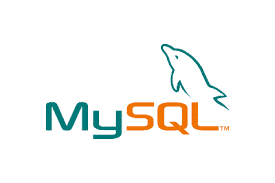

Для базы данных обычно требуется комплексное программное обеспечение, которое называется системой управления базами данных (СУБД). СУБД служит интерфейсом между базой данных и пользователями или программами, предоставляя пользователям возможность получать и обновлять информацию, а также управлять ее упорядочением и оптимизацией. СУБД также упрощает контроль и управление базами данных, позволяя выполнять различные административные операции, такие как мониторинг производительности, настройка, а также резервное копирование и восстановление.
В качестве примеров популярного программного обеспечения для управления базами данных, или СУБД, можно назвать MySQL, Microsoft Access, Microsoft SQL Server, FileMaker Pro, Oracle Database и dBASE.
Наиболее популярные СУБД:
-
Oracle RDBMS (она же Oracle Database) на первом месте среди СУБД. Система популярна у разработчиков, проста в использовании, у нее понятная документация, поддержка длинных наименований, JSON, улучшенный тег списка и Oracle Cloud.
-
MongoDB cамая популярная NoSQL система управления базами данных. Лучше всего подходит для динамических запросов и определения индексов. Гибкая структура, которую можно модифицировать и расширять. Поддерживает Linux, OSX и Windows, но размер БД ограничен 2,5 ГБ в 32-битных системах. Использует платформы хранения MMAPv1 и WiredTiger.
-

MySQL работает на Linux, Windows, OSX, FreeBSD и Solaris. Можно начать работать с бесплатным сервером, а затем перейти на коммерческую версию. Лицензия GPL с открытым исходным кодом позволяет модифицировать ПО MySQL.
Эта система управления базами данных использует стандартную форму SQL. Утилиты для проектирования таблиц имеют интуитивно понятный интерфейс. MySQL поддерживает до 50 миллионов строк в таблице. Предельный размер файла для таблицы по умолчанию 4 ГБ, но его можно увеличить. Поддерживает секционирование и репликацию, а также Xpath и хранимые процедуры, триггеры и представления.